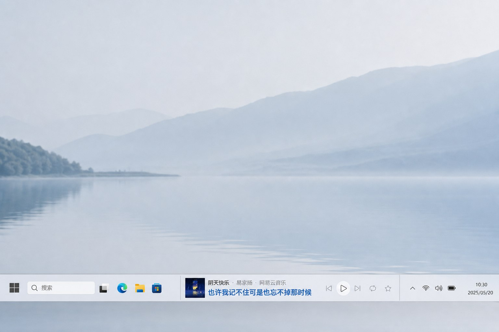

窗口藏得太深
工作、聊天或浏览网页时，为了暂停一下，还要先找到播放器。

本来只是想切一首歌
工作、聊天或浏览网页时，为了暂停一下，还要先找到播放器。
喜欢的一句刚唱过，等打开歌词页时，情绪已经被操作打断。
换个平台就要重新适应按钮位置，常用操作没有统一入口。
MusicBar 融入任务栏，不抢屏幕，也不挡住工作。想看、想切、想暂停，抬手就能完成。
从打开播放器到看歌词，每一个常用动作都变得更短。
歌名、歌手、平台和当前歌词集中显示，不用猜，也不用切回播放器确认。
阴天快乐 易家扬 网易云音乐
听阴天说什么
歌词跟着音乐向前走，喜欢的一句始终清楚地留在眼前。
播放、暂停、上一首、下一首和循环模式，都在同一个顺手位置。
网易云音乐、QQ音乐、汽水音乐、Spotify 和 Apple Music，都可以拥有一致的快捷体验。
网易云音乐 QQ音乐 汽水音乐 Spotify Apple Music
MusicBar 会显示电脑里已有的音乐播放器。点一下图标，就能直接开始。
免费下载 MusicBar，让每一次播放都更顺手。
下载 MusicBar